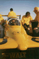
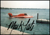

We have a couple of Unlimited Hydroplane Screen Savers for Windows(TM). The nicest is the latest, with 26 of the best photos from our 1996 Gold Cup Unlimited Photo Gallery.
The 1996 Gold Cup Screen Saver - Click on the DeWalt photo to download UHYDRO4.ZIP now. (Win3.1x, Win95, and WinNT compatible) [1.44M]

This screen saver offers a few photos and autographs of drivers past and present. Sorry, this one is a little older and has not been tested under Win95 and WinNT. Click on the Mark Tate photo to download UHYDRO3.ZIP now. [961K]

To install these screen savers, you will need to know how to 'UNZIP' a ".ZIP" archive file. Popular programs for doing this are NetZIP, WinZIP and PKUNZIP. After 'unzipping', all that is left to do is to copy the file to the appropriate Windows directory (as described in the text file contained in the archive).
All screen savers written by Brian Reed. Photographs in the 1996 Gold Cup screen saver are copyright by the respective SODT volunteer photographers.
 Return to the Top Photo Gallery page.
Return to the Top Photo Gallery page.
All contents Copyright © 1997 Spirit of Detroit THUNDERFEST, except where noted.
Web page created by Brian Reed.
 Return to the Top THUNDERFEST page.
Return to the Top THUNDERFEST page.
All Rights Reserved.